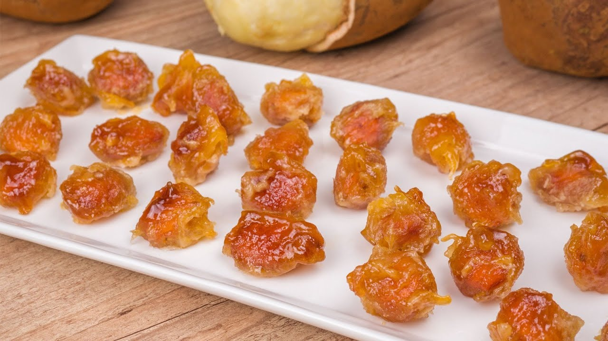

Doce de Cupuaçu
Um doce típico da região Norte, feito com polpa de cupuaçu, açúcar e leite condensado, delicioso, cremoso e com o sabor característico da Amazônia.

Ingredientes
Rende 6 porções
- 300 g de polpa de cupuaçu
- 1 lata de leite condensado
- 1 colher (sopa) de manteiga
- 1/2 xícara de açúcar (opcional, dependendo da acidez da fruta)
- Castanhas-do-pará picadas para decorar (opcional)
Modo de Preparo
Tempo estimado: 30 minutos
- Em uma panela, misture a polpa de cupuaçu, o leite condensado, a manteiga e o açúcar.
- Cozinhe em fogo médio, mexendo sempre, até a mistura engrossar e soltar do fundo da panela.
- Retire do fogo e transfira para um refratário ou forminhas individuais.
- Deixe esfriar e leve à geladeira por pelo menos 1 hora antes de servir.
- Decore com castanhas-do-pará picadas, se desejar.
Dica do Chef: Para intensificar o sabor amazônico, use polpa fresca de cupuaçu e sirva o doce gelado. Combina muito bem com café ou chá da tarde.